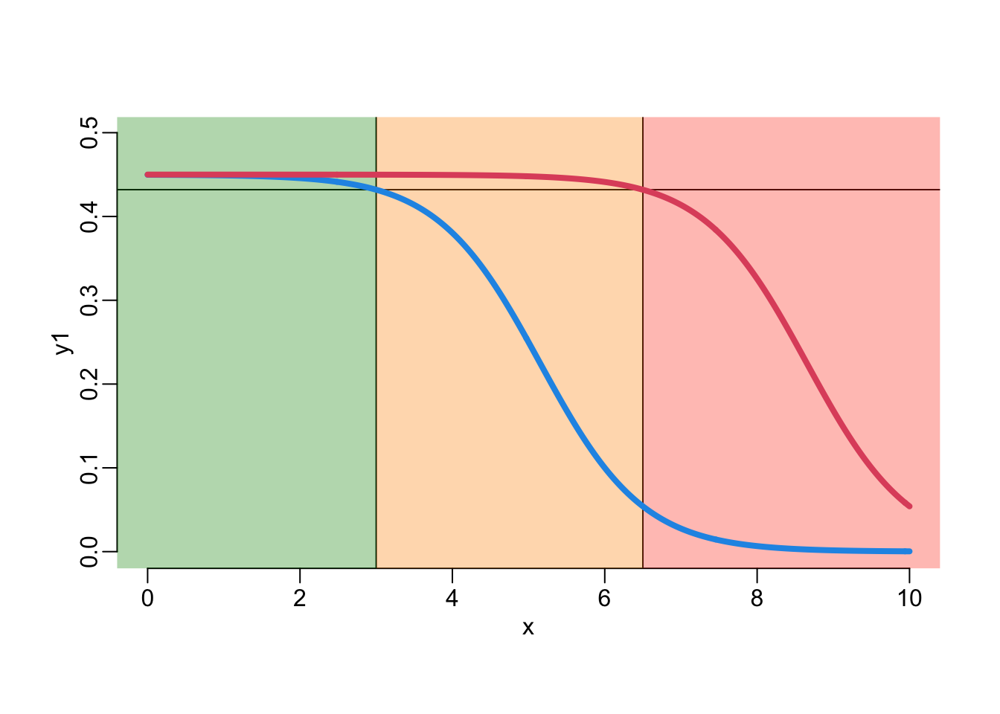
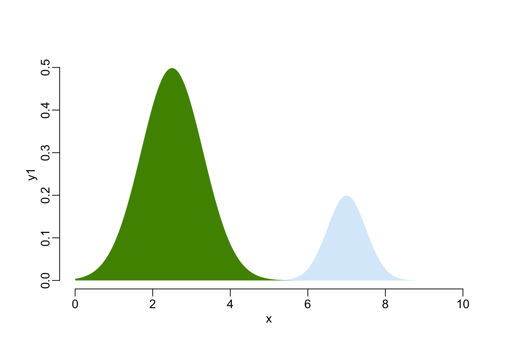
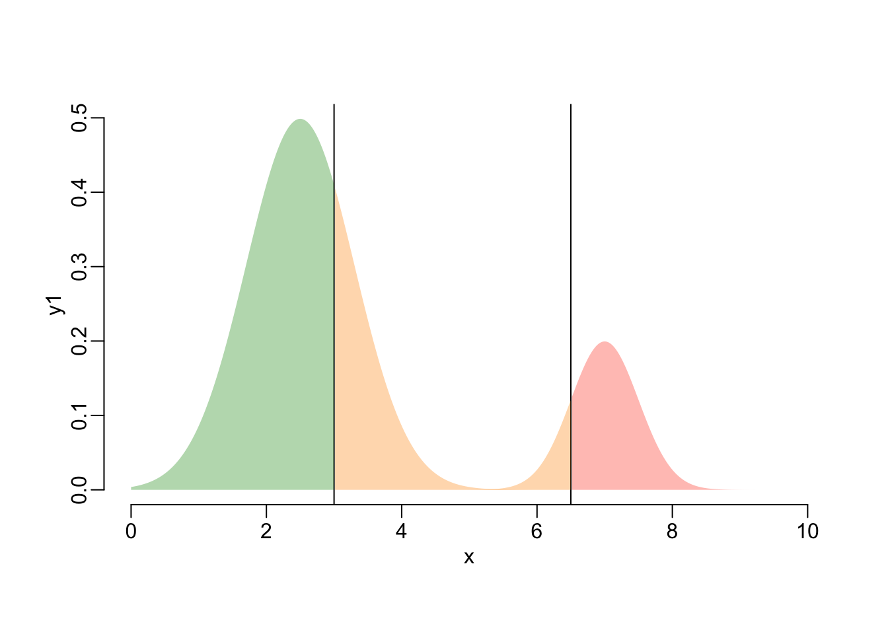

needed_packages <- c("dplyr",
"magrittr",
"plot3D",
"purrr",
"rgl")
to_install <- needed_packages[! needed_packages %in% installed.packages()[,"Package"]]
if (length(to_install)) install.packages(to_install)Quantitative AMR
Packages
library(dplyr)
Attaching package: 'dplyr'The following objects are masked from 'package:stats':
filter, lagThe following objects are masked from 'package:base':
intersect, setdiff, setequal, unionlibrary(purrr)Functions
polygon2 <- function(...) polygon(..., border = NA)polygon3 <- function(x, y, col = 4, alpha = .2, ...) {
polygon2(c(x[1], x, tail(x, 1)), c(0, y, 0), col = adjustcolor(col, alpha))
}polygon4 <- function(x, y, ...) {
polygon2(c(x[1], x), c(tail(y, 1), y), ...)
}polygon5 <- function(x, y, ...) {
polygon2(c(tail(x, 1), x), c(y[1], y), ...)
}plotl <- function(..., lwd = 4, col = 4) plot(..., type = "l", lwd = lwd, col = col)lines2 <- function(..., lwd = 4, col = 2) lines(..., lwd = lwd, col = col)rgb2 <- function(...) rgb(..., alpha = 255 / 3, maxColorValue = 255)rect2 <- function(...) rect(..., border = NA)seq2 <- function(...) seq(..., le = 512)A bimodal distribution
x <- seq(0, 10, le = 512)
y1 <- dnorm(x, 2.5, .8)
y2 <- dnorm(x,7, .5)
plot(x, y1, type = "n")
polygon3(x, y1)
polygon3(x, .25 * y2)
A scale-free metric of resistance
C0 <- 1
C1 <- 3
mic <- seq(0, 10, le = 512)
x <- log(mic / C0) / log(C1 / C0)
plot(mic, x, type = "l", lwd = 4, col = 4)
The MMNP model
The antimicrobial activity as a function of bacterial resistance:
k <- function(x, k0, k1) {
if (any(c(k0, k1) == 0)) return(0)
k0 * (k1 / k0)^x
}An illustration:
x <- seq2(-2, 4)
plotl(x, k(x, 5, 3))
The maximum bacterial growth rate as a function of bacterial resistance:
p <- function(x, pm, p0, p1) {
pm / (1 + ((pm - p0) / p0) * (p0 * (pm - p1) / (p1 * (pm - p0)))^x)
}An illustration:
x <- seq2(-9, 10)
plotl(x, p(x, 10, 5, 3))
The basic reproduction ratio:
R0 <- function(x, k0 = 3, k1 = .03, pm = 10, p0 = 9.5, p1 = 4.75, mu = .9) {
p(x, pm, p0, p1) / (mu + k(x, k0, k1))
}A function that looks for the ESS:
R_evol_level <- function(k0, k1, p1, p0, pm, mu, interval = c(-10, 10), ...) {
Delta <- p0 * (pm - p1) / (p1 * (pm - p0))
Delta2 <- pm / p0 - 1
theta2 <- k1 / k0
derivative <- function(x) {
abs(log(k0 / k1) * k0 * theta2^x / (mu + k0 * theta2^x) -
Delta2 * log(Delta) * Delta^x / (1 + Delta2 * Delta^x))
}
optimize(derivative, interval = interval, ...)$minimum
}Plot of R0:
x <- seq(-.5, 1.5, le = 512)
k0 <- 10
k1 <- .1
pm <- 10
p0 <- 9.5
p1 <- 4.75
mu <- .95
R0_drug <- R0(x, k0, k1, pm, p0, p1, mu)
R0_nodrug <- R0(x, 0, 0, pm, p0, p1, mu)
xStar <- R_evol_level(k0, k1, p1, p0, pm, mu)
R0max <- max(R0_drug)
xmin <- min(x)
xmax <- max(x)
ymax <- max(R0_nodrug)
colS <- rgb2(8, 146, 6)
colI <- rgb2(255, 147, 1)
colR <- rgb2(255, 63, 30)
plot(x, R0_nodrug, ylim = c(0, ymax), type = "n", axes = FALSE,
xlab = "level of resistance", ylab = "R0")
rect2(xmin, -1, 0, ymax, col = colS)
rect2(0, -1, 1, ymax, col = colI)
rect2(1, -1, xmax, ymax, col = colR)
lines2(x, R0_drug)
lines2(x, R0_nodrug, col = 4)
segments(xStar, -1, xStar, R0max, col = 2)
segments(-1, R0max, xStar, R0max, col = 2)
points(xStar, R0max, cex = 1.5, pch = 19, col = 2)
points(min(x), max(R0_nodrug), cex = 1.5, pch = 19, col = 4)
axis(1); axis(2)A function that numerically integrates the integro-differential equation of the model:
simulator <- function(size0, sigma0, pm, p0, p1, k0, k1, alpha, mu, eps, x, time) {
dt <- diff(time)
dx <- mean(diff(x))
A <- 2 * eps^2
B <- sqrt(pi * A)
ps <- p(x, pm, p0, p1)
ks <- k(x, k0, k1)
J <- purrr::map(x, ~ exp(-(.x - x)^2 / A) / B)
distribution <- dnorm(x, 0, sigma0)
mr_bact_pop <- size0 * distribution / sum(distribution)
bact_pop <- list(mr_bact_pop)
mr_pop_size <- pop_size <- sum(mr_bact_pop)
for (dt_val in dt) {
L <- purrr::map_dbl(J, ~ sum(.x * ps * mr_bact_pop)) * dx / (1 + mr_pop_size)^alpha
mr_bact_pop <- (mr_bact_pop + dt_val * L) / (1 + dt_val * (mu + ks))
bact_pop <- c(bact_pop, list(mr_bact_pop))
mr_pop_size <- sum(mr_bact_pop)
pop_size <- c(pop_size, mr_pop_size)
}
list(bact_pop = as.matrix(as.data.frame(bact_pop)), pop_size = pop_size,
x = x, time = time, param = c(size0 = size0,
sigma0 = sigma0,
pm = pm,
p0 = p0,
p1 = p1,
k0 = k0,
k1 = k1,
alpha = alpha,
mu = mu,
eps = eps))
}Solving one example (takes 7”):
x <- seq2(-.5, 1.5)
time <- seq(0, 300, .1)
size0 <- 2.5
sigma0 <- .05
k0 <- 10
k1 <- .1
pm <- 10
p0 <- 9.5
p1 <- 4.75
mu <- .95
alpha <- 1
eps <- .01
out <- simulator(size0, sigma0, pm, p0, p1, k0, k1, alpha, mu, eps, x, time)A first visualization (takes 3”):
with(out, image(x, log10(time[-1]), bact_pop[, -1], bty = "o",
xlab = "level of resistance", ylab = "log10(time)"))
A second visualization (takes 5”):
with(out, persp(x, log10(time[-1]), bact_pop[, -1], col = 4, border = NA, shade = TRUE,
theta = -45, phi = 15, r = 10 * sqrt(3), expand = 1 / 3, box = FALSE))
A third visualization (takes 26”):
with(out, plot3D::persp3D(x, log10(time[-1]), bact_pop[, -1], theta = -45, phi = 15,
r = 10 * sqrt(3), expand = .6, box = FALSE, shade = 1,
alpha = 1, image = TRUE, zlim = c(-.1, .1)))
A fourth visualization:
# rgl::open3d()
# with(out, rgl::persp3d(x, log10(time[-1]), bact_pop[, -1]))with(out, plotl(log10(time[-1]), log10(pop_size[-1]), xaxs = "i",
xlab = "log10(time)", ylab = "log10(population size)"))
mean_resistance <- function(out) {
with(out, bact_pop |>
as.data.frame() |>
purrr::map(magrittr::multiply_by, x) |>
purrr::map_dbl(sum) |>
magrittr::divide_by(pop_size))
}plotl(log10(out$time[-1]), mean_resistance(out)[-1],
xlab = "log10(time)", ylab = "mean level of resistance")
Treatment outpout
cb <- function(p, k, mu) {
k * pm / ((mu + k) * (pm - p))
}k_mu <- function(cb, pm, mu) {
gamma <- pm * (1 - cb) / 2 - mu
(gamma + sqrt(gamma^2 + mu * (pm - mu))) / mu
}# p02 <- p0
p02 <- 7
cb_max <- 4
veps <- .001
mu_val <- seq(veps, 1000, veps)
cb_val <- seq2(0, 25)
cb0 <- cb(p02, k0, mu_val)
cb1 <- cb(p1, k1, mu_val)
y0 <- c(0, k0 / mu_val)
y1 <- c(0, k1 / mu_val)
cb0 <- c(0, cb0)
cb1 <- c(0, cb1)
cbs <- seq2(0, cb_max)
line_green <- data.frame(x = cbs, y = approx(cb0, y0, cbs)$y) |>
na.exclude() |>
arrange(x)
line_red <- data.frame(x = cbs, y = approx(cb1, y1, cbs)$y) |>
na.exclude() |>
arrange(x)
line_black <- data.frame(x = cbs, y = approx(cb_val, k_mu(cb_val, pm, mu), cbs)$y) |>
na.exclude() |>
arrange(x)
Xintersect <- function(df) {
df |>
left_join(line_black, by = "x") |>
filter(y.x > y.y) |>
pull(x) |>
head(1)
}
Xintersect0 <- Xintersect(line_green)
Xintersect1 <- Xintersect(line_red)
#######################################################################################
plot(NA, xlim = c(0, 4), ylim = c(0, 3), xaxs = "i", yaxs = "i", bty = "o",
xlab = "cost / benefit of resistance", ylab = "drug efficacy")
full_join(line_black, line_green, by = "x") |>
mutate(y = map2_dbl(y.x, y.y, min, na.rm = TRUE)) |>
with(polygon3(x, y, col = colS, alpha = 1))
polygon(c(line_green$x, rev(line_red$x)), c(line_green$y, rev(line_red$y)), col = colI,
border = NA)
with(line_red, polygon4(x, y, col = colR))
with(line_black, polygon5(x, y, col = "lightgrey"))
with(filter(line_red, x < Xintersect1), lines2(x, y))
with(filter(line_red, x > Xintersect1), lines2(x, y, lty = 3))
with(filter(line_green, x < Xintersect0), lines2(x, y, col = 3))
with(filter(line_green, x > Xintersect0), lines2(x, y, col = 3, lty = 3))
abline(v = 1 / c(1 - p1 / pm, 1 - p02 / pm), col = 2:3)
with(line_black, lines2(x, y, col = 1))